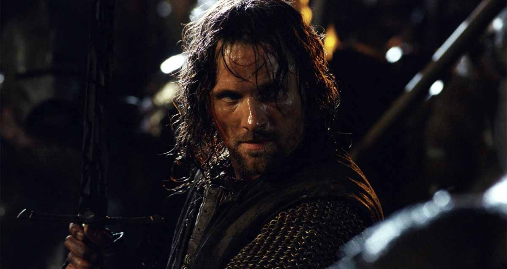
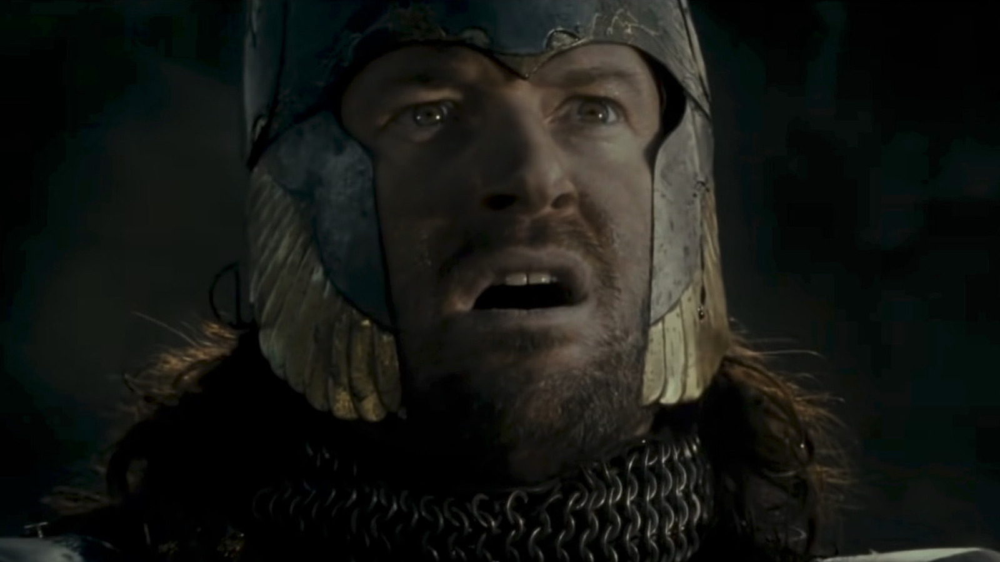
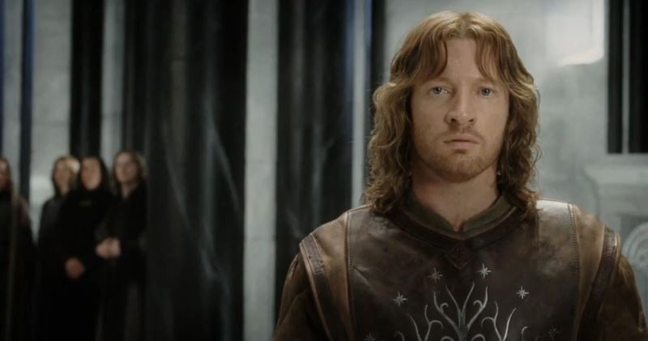

{kind=link}
İnsanlar, Yüce Tanrı, Ilúvatar tarafından yaratılan ikinci önemli ırktı, çünkü onlar Birinci Çağ'ın başlangıcında, Güneş'in ilk yükselişinde (BÇ 1) uyanırken, elfler onlardan üç Çağ önce uyanmıştı. Onlara elfler tarafından "Sonradan doğan" (Quenya: Atani, Sindarin: Edain) denildi. İnsanlar İnsanların Hediyesini taşır,bu da ölümlülüktür, ve bu nedenle zamanları geldiğinde yaşlanır ve ölürler. Ayrıca hastalık ve hastalıklara karşı hassastırlar. Vücutları katledilse bile, ruhları sürdüğü sürece dünyaya bağlı kalacak ve serbest bırakılana ya da dünya sona erene kadar beklemek için Mandos'un Salonları'na geçecektir.
Aragorn
Doğumundan iki yıl sonra babası Arathorn bir ork okuyla gözünden vurularak öldürüldüğü zaman Dunedain’lerin on altıncı reisi oldu. Annesi Gilraen onu Ayrıkvadi’de yaşaması için Elrond’un yanına götürdü. Elrond ona babalık etti ve onu kendi oğlu gibi sevdi. Aragorn’a 20 yaşına gelene kadar kim olduğu söylenmedi. Elrond onun artık olgunlaştığına karar vermişti. Ve ona Isildur’un yadigarlarını verdi: Barahir yüzüğünü ve Isildur’un parçalarını. Sonraki gün Lothlorien’den Ayrıkvadi’ye gelen Arwen ile karşılaştı. Ona Luthien’i hatırlattı yani ölümlü bir adam olan Beren için ölümsüzlüğünden vazgeçen elfi. Arwen’e aşık olmuştu
Boromir

Boromir, ÜÇ 2978 yılında doğdu. Denethor II'nin ve karısı Finduilas'ın en büyük çocuğudur ve Denethor'un ölümünden sonra vekilharçlığı üstlenecekti. Boromir sadece on yaşındayken annesi öldü. Yüzük kardeşlerinin bir diğer üyesidir. Boromir, Tek Yüzük'ü imha etme fikrini beğenmedi çünkü Sauron'u bir kez ve herkes için yenmek, Gondor'u kurtarmak ve eski ihtişamına geri döndürmek için kullanılabileceğine inanıyordu; Frodo'yu yüzüğü ona vermeye ikna etmeye çalıştı. Frodo reddettiğinde, Boromir zorla almaya çalıştı ama hobbit yüzüğü taktı ve kaçtı.Bu olaydan sonra diğer iki hobbiti kurtarmaya çalışırken orglar tarafından öldürüldü
İsildur
Isildur, Elendil'in en büyük oğlu ve Anárion'un erkek kardeşi idi. Gondor ve Arnor'un Yüksek Kralı olan Isildur ve kardeşi Anarion, güney'de Gondor'u birlikte yönetirken, babaları kuzey'de yaşıyordu. Son İttifak Savaşı sırasında Isildur, Tek Yüzüğü Sauron'un elinden kesti, ancak imha etmeyi reddetti. Isildur daha sonra orklar tarafından Ferah Çayırlar Felaketi'nde öldürüldü ve Yüzük, yaklaşık 2500 yıl boyunca kayboldu. Yüzüğü yok etmeyi reddetmesi, Sauron'un ruhunun güçlenmesine izin verdi ve gelecek yıllar boyunca Orta Dünya'ya tehdit olarak kalmasını sağladı.
Faramir
Faramir beş yaşındayken Finduilas öldü. Ölümü Denethor'un ailesinden kopmasına neden oldu. Faramir kendisinden beş yaş büyük ağabeyi Boromir ile daha da yakınlaştı ve aralarındaki sevgi büyüdü. Denethor açık bir şekilde Faramir'e kıyasla Boromir'i tercih etmesine rağmen, aralarında kıskançlık ya da rekabet yoktu. Boromir onu korudu ve yardım etti, ve Faramir ağabeyine baktı. Her ne kadar kardeşler siyah saçlı ve gri gözleriyle görünüşte çok benzer olsalar da, kişilikleri o kadar değildi. Boromir, daha cesur, korkusuz ve güçlü bir savaşçı olarak tanımlandı. Faramir’in cesareti, nazik doğası, bilim ve müzik aşkı nedeniyle yanlış değerlendirildi.